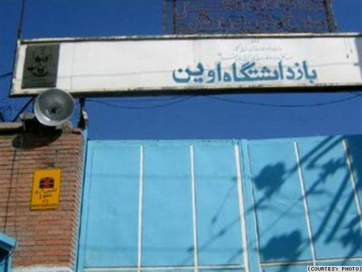

|
|
|
Browsing
Contact Us |
Campaigners |
Face to Face |
Tribune |
Interview |
News |
On the Web |
One Million |
Report
Farsi | Français | German | Italian | Spanish | العربية Also in this section
|
 A ’Mourning Mother’ Recalls Evin PrisonFriday 29 January 2010 View online : Radio Free Europe Blogger Jomhoriyat has published writings by one of Iran’s mourning mothers about her detention in Tehran’s Evin prison. The Mourning Mothers — women who have lost their children in the postelection crackdown or those whose children have been jailed — had in recent months been gathering every Saturday in a park in Tehran but they’ve come under pressure from the security forces and several of them have been detained and harassed: At first they made us wait for a while in Evin, after which we again had to wait in the cold corridors until we were called one by one into a room where we had to wear number plates around our neck, and...get photographed. The statement on top of our heads read: "Propaganda against the government." We were then assembled into queues, and again there was an interminable wait. They had made quite a few of the others wait outside in the cold. In the midst of all this, one of the ladies cursed loudly, which made the terrifyingly huge guard with a wireless in his hands bellow in his thick voice, "Whoever that was, step outside and show yourself, you piece of dirt." Given his appearance and the fact that we were the detainees, a pin drop silence ensued. They yelled at us again, "Get out, all of you!" and we once again waited outside in the cold. In the midst of all this, when the voice of the same guard rose once more, a lady went to him and said, "It would have been better if you had been just a little more polite, don’t you think?" The guard retorted, "You people curse at us all the time, is it our fault? We are mere guards, prison guards — it was not us who ordered your arrest." The women responded, "Well now, it is you who have the authority to maneuver the situation here. It is not nice to add those harsh words on top of it." Her statement gave everyone a kick-off to pour in their complaints. After much hue and cry, we were taken to a hall named Section 203 of Evin. After filling out another set of forms and a full-body search, every six or seven people were taken to a 2x4 meter room with clean, light green walls equipped with a toilet seat, a shower, and a sink, all of them uncovered. This meant we all had to use the toilet in an open manner. We were provided with food and blankets, and our request for medicine was handled by the personnel of the relevant section — all of them being record holder prisoners who spent their detention period by working there, whose attitudes were slightly better. There was a camera in the room, and we could be heard as well. The section was dedicated to all the girls arrested on Ashura, who after 14 days of their arrest had not been granted the right to call their families. The moment we arrived, we saw a girl with beautiful curls and a tiny physique enter with tears running down her cheeks, while all of her fellow detainees, whom we could only hear, announced her arrival. Apparently, she was removed from the solitary for interrogation in the middle of the previous night. They had taken her to a cement room in complete darkness in order to make her confess and accept responsibility for the publishing the messages and the crowd on Ashura. She was afraid of physical abuse and torture, but didn’t go any further than mental suppression. You should have seen the anxious look on her face. Her face is still right before my eyes. In the other corner of the hall, a brave lady who had hit a guard on Ashura and got two months of solitary detention for that stayed in her room. Coincidently, the surname of one of the attendees of this section was Mir Hossein, and this lady, when neglected of her demands, would yell, "There is no hot water, no shampoo, you don’t even listen to us; now, have it your way." She would then scream at the top of her voice, "Mir Hossein!" and everyone in response would yell, "Ya Hussein!"(editor’s note: "Ya Hossein, Mir Hossein" is a chant used by opposition members in antigovernment protests) and vice-versa. She was a blessing for us, as it was enough for us to convey our demand to her and she would yell with her strong masculine voice and ask for it or easily create a state of chaos in the whole section. Her kindness was like that of a child, and her voice a strength in it that would give us hope. The first night seemed interminable. The next day we started a new game. We would talk so loudly that those in other cells could hear us. We practiced a positive perception and decided to review the picture of our freedom. We avoided harsh language and negative thoughts so our dreams could come true. The kindness of all toward the others was unique. We were innovative; and the unity in our slogans and anthems that would echo in the entire section was priceless. The sounds of torture would resonate in the cells at night, but we would not be fooled by it; we would give each other hope by singing to each other. We had accepted to prefer death to an air filled with such suppression. When there was no space for minorities out there, why would we want such freedom? The mere presence of our countrywomen beside us, who had the simplest of all requests; freedom, would suffice us. We stayed next to each other at all times, which was the only thing that made us happy there. The things I learned during this short time were more valuable to me than a university degree, and I could never forget a single moment of those times. We all got stronger; we could now firmly step forward. We prayed each night that God might uproot ignorance from our land, as it is the only cause of these misfortunes. It reminds me of what Islamic thinker Ali Shariati had said: that illiteracy is not when one cannot read or write, rather it is when one does not want to learn. What we should keep in mind is that we could be the cause of developments instead of being the victims of change. We realized that we are countless; that our definite right is to be free; that we didn’t work hard enough. We realized that we were condemned for being Green. Such intellect, strong morale, and abundant knowledge can further uplift us; we deserve a better atmosphere. We realize this, and it is not fair to us being the prisoners of the unwise. |